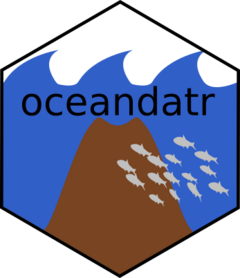
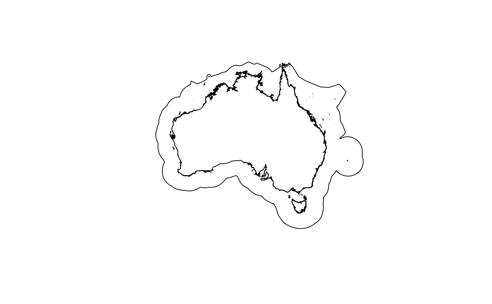
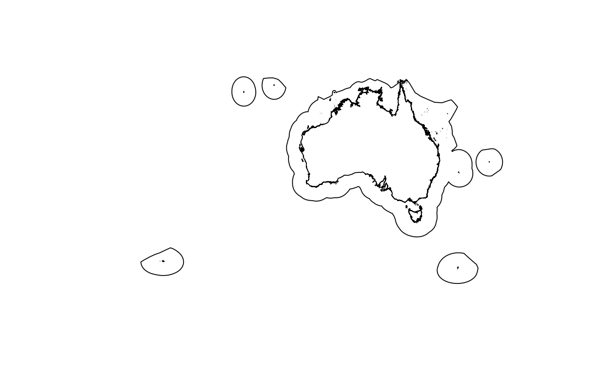
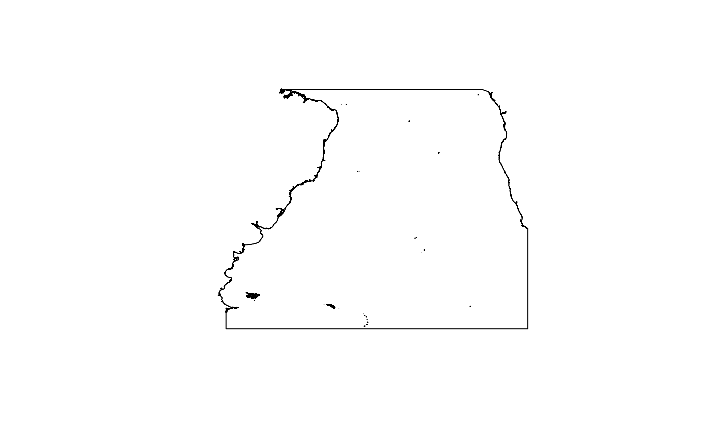
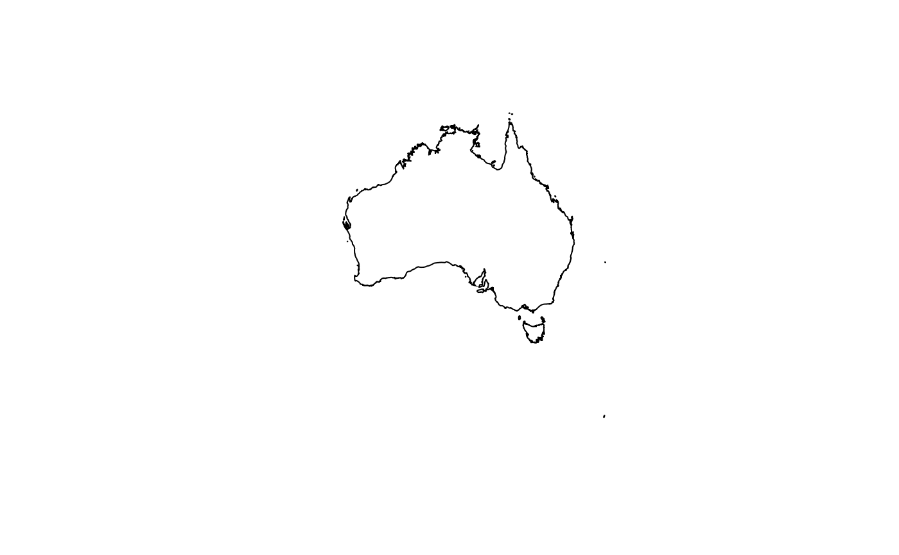
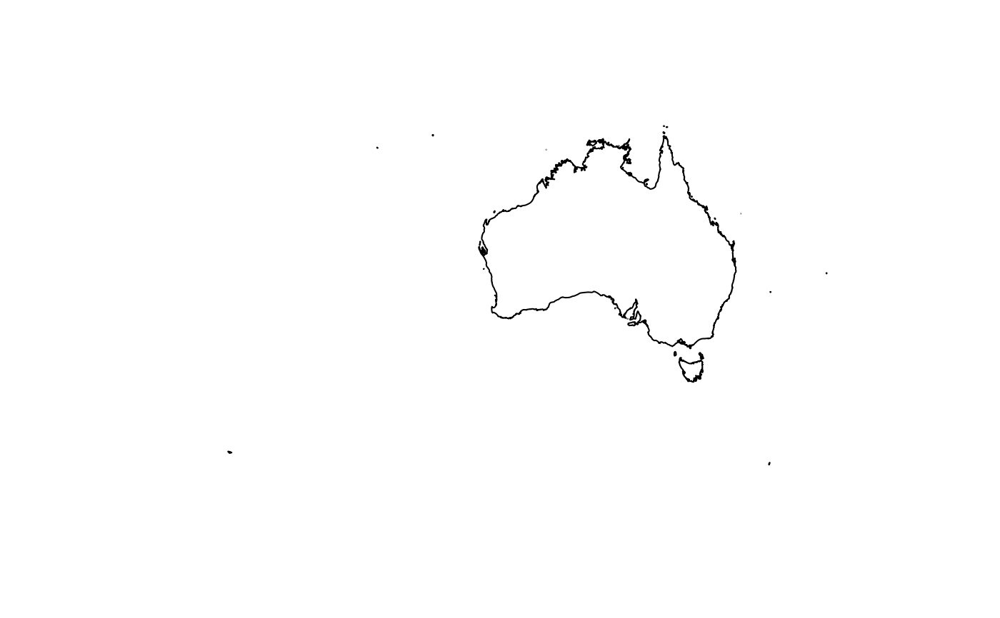
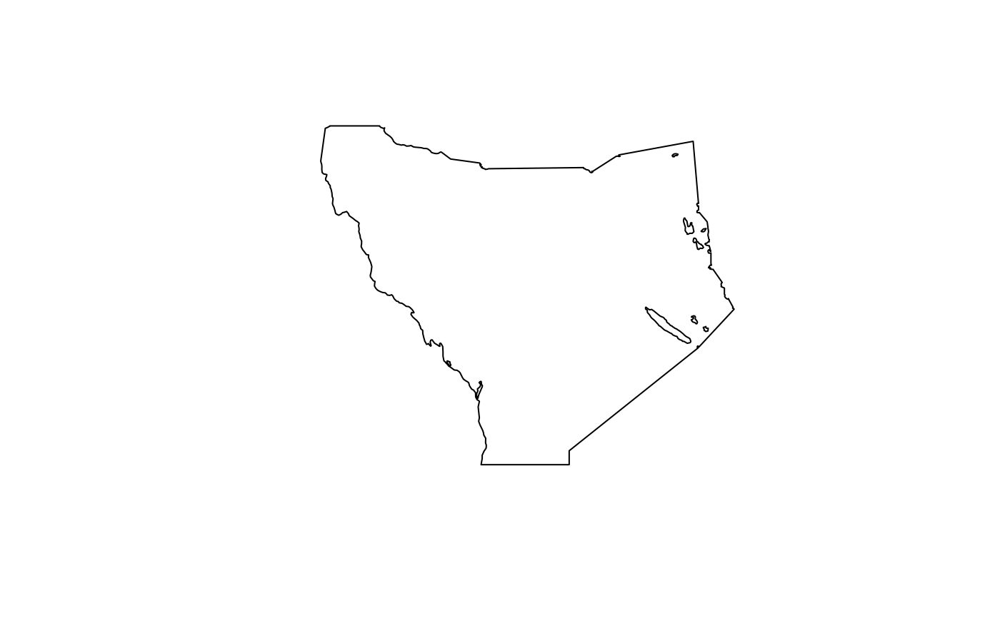

Get boundaries for an area of interest
get_boundary.RdMarine and land boundaries can be obtained. For marine boundaries, a boundary (e.g. an EEZ) is retrieved directly from the [Marine Regions](https://marineregions.org/gazetteer.php) WFS API. For land boundaries and the "seas_oceans" type, the package [`rnaturalearth`](https://github.com/ropensci/rnaturalearth/) is used.
Arguments
- name
`character` name of the country or region. If `NULL` all boundaries of `type` are returned. If `name` is not an exact match, fuzzy matching with a list of possible options is attempted. Ignored for `type = "high_seas"`
- type
`character` the boundary type. Can be one of: * `eez`: Exclusive Economic Zone (EEZ; 200nm). These EEZs differ slightly from the the [UN Convention on the Law of the Sea (UNCLOS)](https://www.un.org/depts/los/convention_agreements/texts/unclos/part5.htm) definition because the archipelagic waters and the internal waters of a country are included. * `12nm`: 12 nautical miles zone (Territorial Seas), defined in [UNCLOS](https://www.un.org/Depts/los/convention_agreements/texts/unclos/part2.htm) * `24nm`: 24 nautical miles zone (Contiguous Zone), defined in [UNCLOS](https://www.un.org/Depts/los/convention_agreements/texts/unclos/part2.htm) * `ocean`: Global Oceans and Seas as compiled by the Flanders Marine Data Centre. Names are: "Arctic Ocean", "Baltic Sea", "Indian Ocean", "Mediterranean Region", "North Atlantic Ocean", "North Pacific Ocean", "South Atlantic Ocean", "South China and Easter Archipelagic Seas", "South Pacific Ocean", and "Southern Ocean". * `high_seas`: as defined by the UN Law of the Sea: "all parts of the sea that are not included in the exclusive economic zone, in the territorial sea or in the internal waters of a State, or in the archipelagic waters of an archipelagic State". Note that `name` and `country_type` are not relevant for this query: only all High Seas areas can be downloaded. * `country`: country boundaries from Natural Earth * `seas_oceans`: Seas, oceans, bays, gulfs, inlets etc. as defined in the Natural Earth marine polygons
More details on the marine boundaries can be found on the [Marine Regions website](https://marineregions.org/sources.php), and for land boundaries (plus "seas_oceans"), the [Natural Earth website](https://www.naturalearthdata.com/features/). Note that data from Natural Earth is downlaoded at the highest resolution (1:10m).
- country_type
`character` must be either `country` or `sovereign`; ignored for `type = "high_seas"`, `"ocean"` or `"seas_oceans"`. Some countries have many territories that it has jurisdiction over. For example, Australia, France and the U.K. have jurisdiction over many overseas islands. Using `sovereign` returns the main country and all the territories, whereas using `country` returns just the main country. More details about what is a country via the `rnaturalearth` package [vignette](https://cran.r-project.org/web/packages/rnaturalearth/vignettes/what-is-a-country.html)
Examples
#Marine boundary examples:
australia_mainland_eez <- get_boundary(name = "Australia")
plot(australia_mainland_eez["geometry"])

#this includes all islands that Australia has jurisdiction over:
australia_including_territories_eez <- get_boundary(name = "Australia", country_type = "sovereign")
plot(australia_including_territories_eez["geometry"])

#South Atlantic Ocean area:
south_atlantic <- get_boundary(name = "South Atlantic Ocean", type = "ocean")
plot(south_atlantic["geometry"])

#Land boundary example:
australia_land <- get_boundary(name = "Australia", type = "country")
plot(australia_land["geometry"])

#this includes all islands that Australia has jurisdiction over:
australia_land_and_territories <-
get_boundary(name = "Australia", type = "country", country_type = "sovereign")
plot(australia_land_and_territories["geometry"])

#Sea boundary:
coral_sea <- get_boundary(name = "Coral Sea", type = "seas_oceans")
#> Reading ne_10m_geography_marine_polys.zip from naturalearth...
plot(coral_sea["geometry"])
